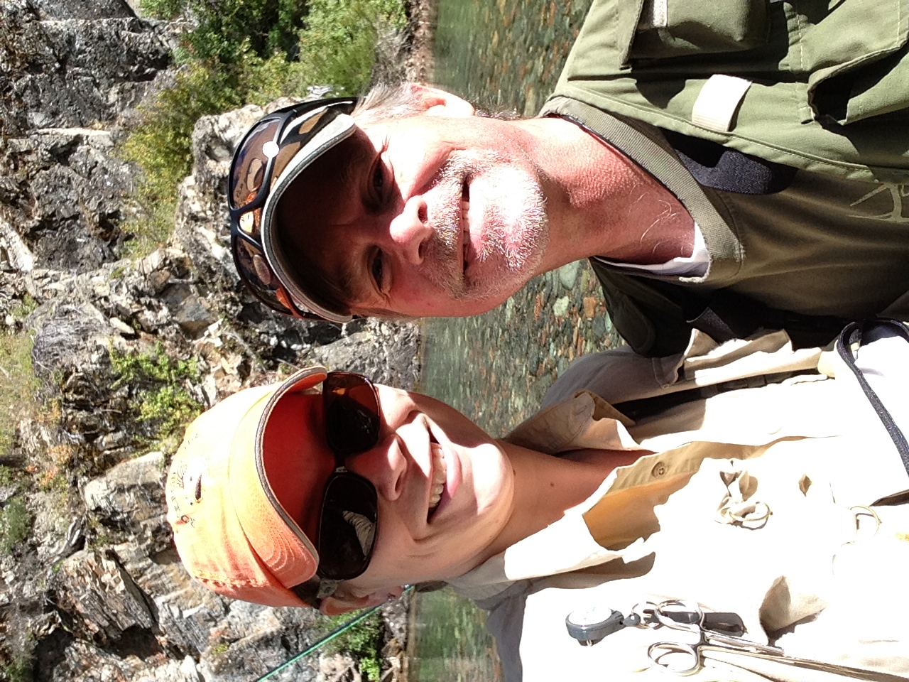

Leather working has always been a hobby of mine, one of many. With my dream career as a Critical Care Flight
Medic,
my wife’s career in HR and raising our two daughters, there was never enough time for ALL of our hobbies. I’ve
always
been an avid outdoorsman - big game hunting, pheasant hunting, backcountry riding, camping. I loved it all. I
also enjoy
some smaller, more detailed hobbies - building fly rods, tying flies and of course leather work.
January 16th, 2017 changed all that. I suffered a massive Pulmonary Embolism that landed me in the ICU
with an aggressive
treatment. That treatment lead to more major complications and needing to be life flighted to Harborview in
Seattle. Most
medical professionals who had a part in my care didn’t expect me to return to Helena, MT. However, 30 days after
I was
admitted to Harborview, I returned to Montana. Albeit to an intensive inpatient rehab, I was almost home.
Finally returning to my home in Clancy on March 1st, 2017, I still suffered from stroke-like symptoms and
was unable
to return to my profession. Leather tooling became, unbeknownst to me, quite the physical therapy. After a year
of trying
to get my groove back, I’ve found it and my passion again.
That’s how Vigilante LeatherWorks came about. I look forward to making you a custom leather piece and sharing my
love of
leather and a beautiful product. Take a trip through my product albums and let me know what you like. If you
don’t see
something you are interested in, let me know what you have in mind! My wife, who is also my design partner, and
I look
forward to creating a beautiful Montana Made leather good for you.
Thank you for your support and interest in our products!
Timm & Brianna Goettel
